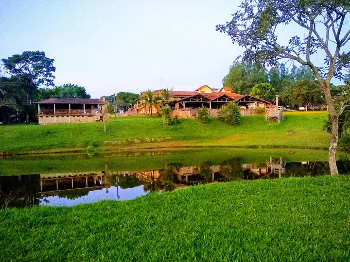
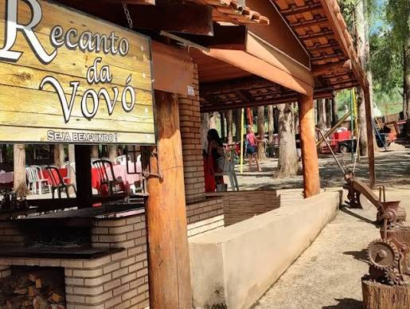
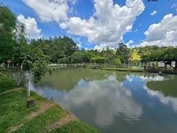

Mais que uma refeição.
O Recanto fica no meio do verde, em São José do Rio Pardo. Aqui a comida sai do fogão a lenha, a mesa é de família e ninguém olha o relógio.
Bar, restaurante e pesqueiro no mesmo lugar. Almoço em família, mesas ao ar livre, música ao vivo em alguns dias e tempo de sobra para ficar.
Faixa de preço:
Você não visita o Recanto.
Você desacelera nele.

Tem comida que alimenta.
E tem comida que lembra alguém.
Aqui, o almoço vem acompanhado de natureza.
Sombra, passarinho e espaço para as crianças correrem. Escolha uma mesa e fique à vontade.

Tem sempre um motivo para ficar mais um pouco.
Música ao vivo e eventos. Programação de exemplo, edite em script.js.
Como chegar
Horários
@recantodavovo2014
Fotos, novidades e a agenda da casa.
Ver no Instagram